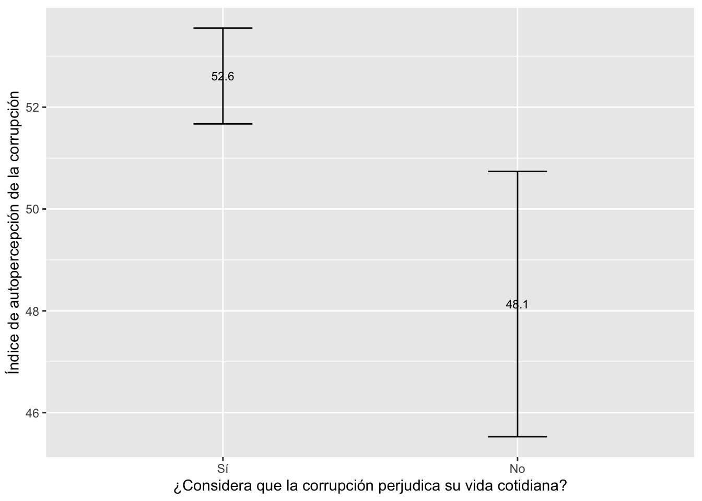

Práctica dirigida 6

FACULTAD DE CIENCIAS SOCIALES - PUCP
Curso: POL 278 - Estadística para el análisis político 1 | Semestre
2024 - 1
Prueba T para diferencia de medias
Generalmente, cuando queremos comparar dos grupos centramos nuestra atención en el promedio de cada uno. Sin embargo, el hecho de que los promedios sean distintos no supone, necesariamente, que existe una diferencia estadísticamente significativa.
Para saber si la diferencia observada entre las medias de dos grupos es o no significativa se emplean métodos paramétricos como el de Z-scores o la distribución T-student. Estas técnicas calculan los intervalos de confianza de cada grupo y concluyen si existe una diferencia real entre las medias.
La prueba T compara la media de una variable numérica para dos grupos o categorías de una variable nominal u ordinal. Los grupos que forman la variable nominal/ordinal tienen que ser independientes. Es decir, cada observación debe pertenecer a un grupo o al otro, pero no a ambos.
library(rio)
data=import("PROETICA_2022.xlsx")| Nombre de variable | Etiqueta |
|---|---|
| genero | 1:Hombre, 2:Mujer |
| edad | Edad de la persona en años |
| deforestacion | ¿Cree que el Estado peruano hace lo suficiente para enfrentar la deforestación y la tala ilegal o no? 1:Sí, hace lo suficiente, 2:No hace lo suficiente |
| corrupcion | ¿Usted cree que la corrupción lo perjudica en su vida cotidiana o no? 1: Sí, me perjudica, 2: No me perjudica |
| informado | En general, ¿qué tan informado está/ se siente usted respecto al acontecer político nacional? 1:Nada/ Poco informado, 2:Algo/ Muy informado |
| autopercepcion | Índice aditivo de autopercepción sobre la corrupción en el Perú* |
*Para la creación del índice se consideraron las siguientes variables:
Autopercepción sobre qué tan corruptos son los peruanos
Autopercepción sobre qué tan corruptos son en su ciudad
Autopercepción sobre qué tan corruptos son en su barrio
Autopercepción sobre qué tan corruptos son en su familia o en sus amistades
Autopercepción sobre qué tan corrupto es usted mismo
Pregunta de investigación
En base a esta encuesta deseamos responder si, a un 95% de confianza: ¿Existirán diferencias significativas en el Índice de autopercepción sobre la corrupción en el Perú según si considera o no que la corrupción le afecta en su vida diaria?
Análisis Exploratorio de Datos
library(tidyverse)CONFIGURACIÓN ADECUADA DE LAS VARIABLES A UTILIZAR
Configuramos el factor:
str(data$corrupcion)## chr [1:1683] "1" "1" "1" "1" "1" "1" "1" "1" "2" "1" "1" "1" "2" "1" "1" ...data = data %>%
mutate(corrupcion = factor(corrupcion, levels = 1:2, labels = c("Sí","No")))
str(data$corrupcion)## Factor w/ 2 levels "Sí","No": 1 1 1 1 1 1 1 1 2 1 ...Verificamos la numérica:
str(data$autopercepcion)## num [1:1683] 60 90 45 70 55 30 65 45 60 40 ...summary(data$autopercepcion)## Min. 1st Qu. Median Mean 3rd Qu. Max.
## 0.00 40.00 50.00 52.04 65.00 100.00EXPLORACIÓN DE LOS ESTADÍSTICOS MUESTRALES
La media del índice es:
data |>
summarise(mean(autopercepcion, na.rm = TRUE))## mean(autopercepcion, na.rm = TRUE)
## 1 52.03506La media por grupo (según variable corrupción) es:
data |>
group_by(corrupcion) |>
summarise(mean(autopercepcion, na.rm=T))## # A tibble: 2 × 2
## corrupcion `mean(autopercepcion, na.rm = T)`
## <fct> <dbl>
## 1 Sí 52.6
## 2 No 48.1Vemos una diferencia en la muestra. Esta será significativa?
Realizar la prueba de hipótesis
Recordemos que para esta prueba, las hipótesis con las que vamos a trabajar son:
H0: No hay diferencia entre las medias del índice aditivo de autopercepción de la corrupción entre el grupo que considera que la corrupción afecta su vida cotidiana y el que no lo considera. (Las medias son iguales en los grupos)
H1: Sí hay diferencia entre las medias del índice aditivo de autopercepción de la corrupción entre el grupo que considera que la corrupción afecta su vida cotidiana y el que no lo considera. (Las medias no son iguales en los grupos)
Ahora utilizamos la función t.test() para calcular el
p-value. Recuerda que el p-valor es la proabilidad de observar una
diferencia de medias (Estadístico de Prueba) como la observada,
asumiendo que la hipótesis nula sea verdadera (que las medias
poblacionales sean iguales).
t.test(autopercepcion ~ corrupcion,
data = data,
conf.level = 0.95) # El nivel de confianza predeterminado es 0.95. Esto lo podemos modificar. ##
## Welch Two Sample t-test
##
## data: autopercepcion by corrupcion
## t = 3.1848, df = 275.9, p-value = 0.001615
## alternative hypothesis: true difference in means between group Sí and group No is not equal to 0
## 95 percent confidence interval:
## 1.710400 7.247421
## sample estimates:
## mean in group Sí mean in group No
## 52.61255 48.13364Nuestro p-value es 0.001615.
Informar los resultados
Luego de realizar la Prueba T para diferencia de medias, dado que se obtuvo un p-valor (0.001615) que es menor que nuestro nivel de significancia establecido de 0.05, hay evidencia suficiente para rechazar la hipótesis nula. Por lo tanto, concluimos que existen diferencias estadísticamentes significativas en el promedio del Índice de autopercepción sobre la corrupción en el Perú según si considera o no que la corrupción le afecta en su vida diaria.
¿Y si constrastamos el resultado con los intervalos de confianza por grupos?
Comparemos lo encontrado con un gráfico de medias con intervalos de confianza de cada grupo.
library(ggplot2)
library(lsr)data %>%
group_by(corrupcion) %>%
summarise(Media = mean(autopercepcion, na.rm=T),
min = ciMean(autopercepcion, na.rm=T)[1],
max = ciMean(autopercepcion, na.rm=T)[2]) %>%
ggplot(aes(x= corrupcion, y = Media)) +
geom_errorbar(aes(ymin=min, ymax=max), width = 0.2)+
geom_text(aes(label=paste(round(Media,1))), size=3)+
xlab("¿Considera que la corrupción perjudica su vida cotidiana?")+
ylab("Índice de autopercepción de la corrupción")
Interpretación: Tal como se observa, ambos intervalos de confianza no se traslapan, por lo que se puede concluir gráficamente que existe una diferencia estadísticamente significativa entre los grupos con un 95% de confianza en la población.